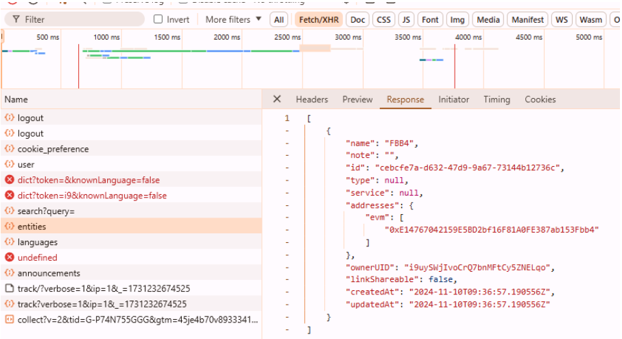

Direcciones EVM
Direcciones Solana
Todas las direcciones
¿Cómo sacar el fichero .json?
Nos vamos a la parte de “Private Labels” en arkham. Abrimos las DevTools con F12, luego nos vamos a la parte de Network y filtramos por “Fetch/XHR”. Sin cerrar las devtools, actualizamos la página de “Private Labels” y veréis que aparecen varias líneas. Seleccionamos la que pone entities y vamos a Response: aquí es donde salen todas nuestras entidades y wallets. Solo queda copiar todo lo de response, pegarlo en un bloc de notas y guardarlo como un fichero con el nombre que queráis .json. Ese es el que habrá que seleccionar en la web.
